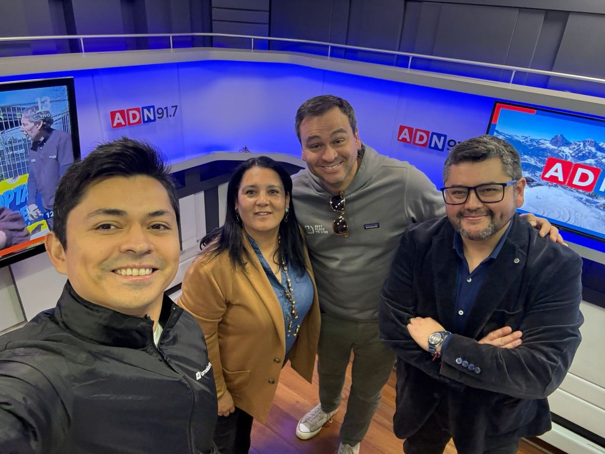

Enamórate del cliente, no de la solución
Nunca diseñes tecnología buscando un problema. Encuentra el problema hablando con la gente en la calle y después aplica la tecnología.
Osorno → Santiago → 10 países
Ingeniero civil en computación, CEO y co-fundador de ComunidadFeliz. Partí tocando puertas de edificios en Providencia a los 24. Hoy somos el software de administración de condominios más usado de Latinoamérica.
Soy el conchito de una familia de seis, criado en Osorno. Mi papá nació en extrema pobreza en Puerto Saavedra y terminó instalando las primeras redes de transmisión televisiva de Chile. Crecí viéndolo desarmar televisores en el patio. Mi mamá me leía Dostoievski a los 10 años. Entre esas dos cosas se explica casi todo lo que hago.
Salí de la universidad y me fui a asset management. Duré poco: sentía que solo estaba haciendo que gente con plata tuviera más plata. A fines de 2015 me junté con Antti Kulppi, que tenía un proyecto incipiente, y le pagué $500.000 de mi bolsillo para entrar. No tenía idea si iba a resultar. Chuta, resultó.
En diciembre de 2016 un cliente me mandó un pan de pascua con una carta: “la Navidad de mi familia es mejor gracias a lo que ustedes crearon”. Ahí me enamoré del cliente para siempre.
Pivoteamos a administración de condominios al ver que los administradores necesitaban transparencia, no más críticas.
Escribí 60 artículos de blog para SEO yo mismo y quemé mi sueldo en Google Ads aprendiendo a los golpes.
De Chile a México, Colombia, Perú y el resto: 10 países operando con el mismo producto.
USD $12M de ARR y el gigante noruego entra al equipo. Como que te fiche el Manchester United: bacán, y una responsabilidad enorme.
Automatización de prospección, agentes conversacionales y herramientas internas. High tempo testing: tira 10 cosas, 8 fracasan, 2 te cambian la empresa.

Nunca diseñes tecnología buscando un problema. Encuentra el problema hablando con la gente en la calle y después aplica la tecnología.
Me infiltré en la clase Touchy Feely de Stanford y me cambió la cabeza. Se puede llorar frente al equipo, se pueden contar los fracasos. Eso es lo que conecta.
Probar mucho y rápido, asumiendo que la mayoría va a fallar. Lo que funciona, escala.
El chaqueteo es deporte nacional. Usa el odio como combustible o simplemente no lo alimentes.
Tenis tres o cuatro veces por semana (le gané un tiebreak a un ATP 800, dato que menciono más de lo socialmente aceptable). Ajedrez, Zelda, Age of Empires y Brandon Sanderson. Dos perritas rescatadas y la Cami, que es el pilar de todo esto. Terapia y psicólogo, sin ningún tabú.
Si estás construyendo algo o quieres conversar de SaaS, IA o proptech, escríbeme.